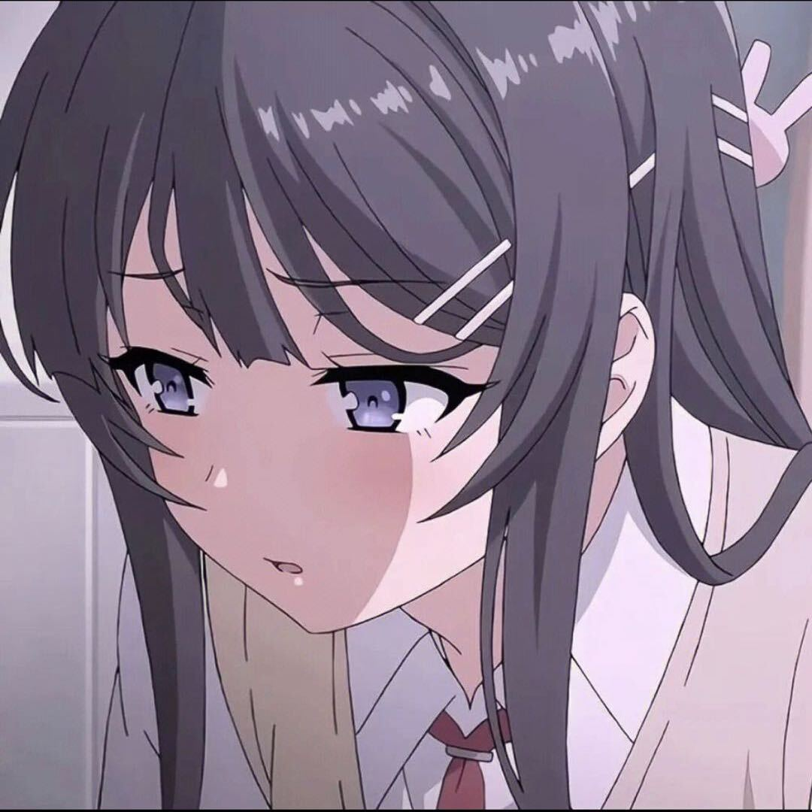

A / 01✎
美工设计
负责游戏各类视觉资源。创作时充分参考组员意见，找准风格定位，反复调整画面，让素材既美观又贴合游戏主题。
- ↗游戏启动图标
- ↗操作界面设计
- ↗场景装饰素材
- ↗项目展示配图

平时我很喜欢画画和视频创作，经常利用空闲时间练习平面设计、图片修图和短视频剪辑。对游戏的画面设计与内容宣传，我也有不少自己的想法。
我喜欢从一个小灵感开始，一点点尝试、调整，再把它变成有氛围、有表达力的完整作品。
从第一张视觉草图，到最终成片呈现。
负责游戏各类视觉资源。创作时充分参考组员意见，找准风格定位，反复调整画面，让素材既美观又贴合游戏主题。
游戏原型完成后，把实机演示和开发花絮剪成完整展示视频，用音乐、字幕与节奏呈现小组作品最出彩的部分。
重视沟通，也享受每一次把细节打磨得更好的过程。
游戏开发离不开每个人的分工配合。
我会及时接收建议、按时完成任务，和伙伴们一起做出让人眼前一亮的游戏作品。